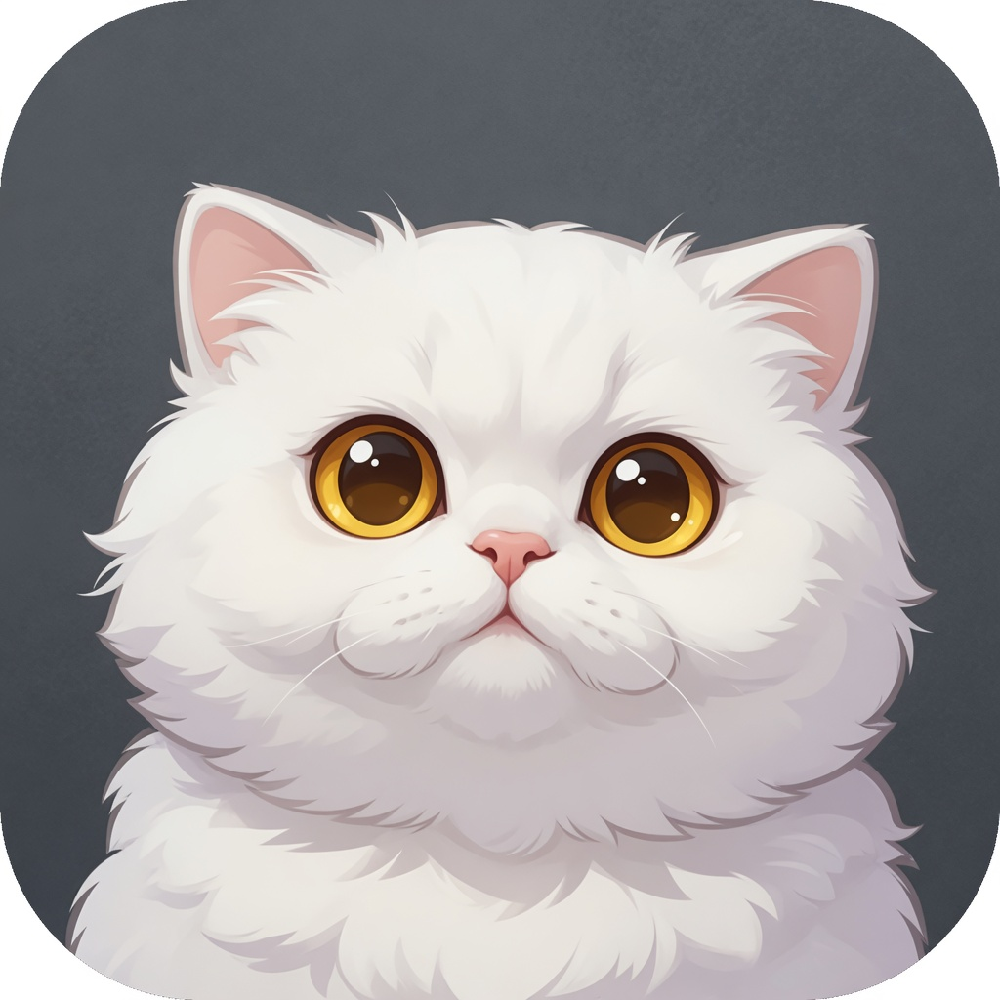
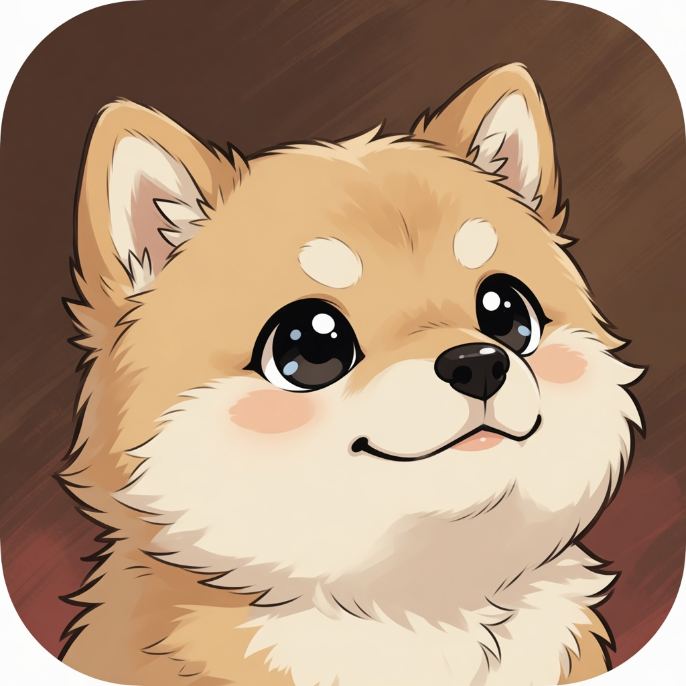

亮点
桌面宠物
右下角那只会一直动。它不挡打字，想理它的时候再看它。
- 标题栏的「宠物」可以显示或关掉。
- 鼠标放上去，会弹出程序员梗。
- 点一下换一个姿势，按住可以拖到别处。
- 正在连接时它会跑，连上会欢呼，失败会垂头。
- 想换一只：打开「设置」，输入 Petdex 名称，例如 boba，或导入本地宠物包。

kittyTerm classical shell
古典linux风自由终端
F11 全屏 · Ctrl+Shift+C 复制 · Ctrl+Shift+V 粘贴
亮点
右下角那只会一直动。它不挡打字，想理它的时候再看它。